迁移 NSX-V 到 NSX-T: Migration Coordinator 方案 - 1 准备
本文将介绍如何使用 Migration Coordinator 的用户自定义拓扑模式来迁移现有的 NSX-V 到 NSX-T 环境的第一部分, 迁移前的准备工作.
迁移中需要考虑的要点
迁移前后的拓扑
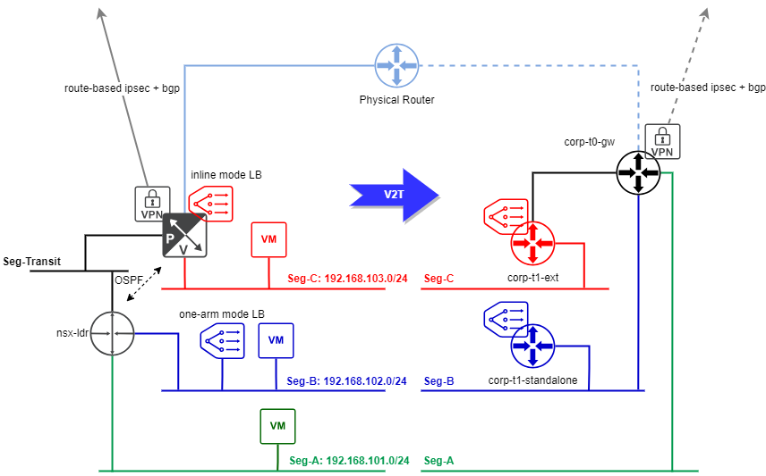
关于物理网络的一些额外的配置信息
- overlay transport vlan: 12
- NSX-V ESG 通过 vlan 11 连接到外部物理世界
这里将进行完全的"就地迁移", 保持外部 ip 地址/dns条目/vpn peering 地址不变. 即使使用用户自定义拓扑, 仅依靠 Migration Coordinator 本身依旧无法完成 NSX-V 到 NSX-T 的转化:
- 有部分 NSX-V 特性不支持通过 MC 进行迁移, 具体可以查看 NSX Migration Guide
- MC 要求用户指定 ESG 到 Tier-X gateway 的映射, 而这样的映射关系并不一定存在
因此对于 MC 无法完成的部分, 或者不想让 MC 自动完成的部分, 用户都可以自行配置:
- 创建 transport zones
- 创建/配置 edge cluster
- 创建连接到外部物理 vlan 的逻辑网段
- 创建/配置 tier-X gateways
- 创建/配置负载均衡器
MC 本身可以自动创建 edge cluster, 这里选择自行部署仅仅是为了获得更大的灵活性 (使用专用的 host 来承载 edge cluster). 根据需要可以在启动 MC 流程之前就配置一部分, 然后在 MC 执行过程中可以暂停流程, 进行额外手工配置后继续 MC 流程.
提前准备 NSX-T 的部分配置
本环境将使用专门的主机来部署 edge cluster, 即承载 edge node 的 ESXi 主机本身不作为传输节点, 因此 edge node TEP 和传输节点可以使用相同 vlan (12) 的地址池.
准备 Edge Cluser
先创建 Edge TEP 地址池
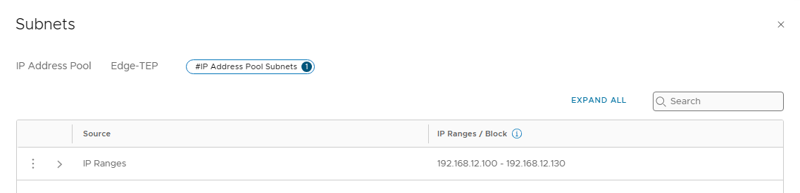
创建 Edge Uplink Profile
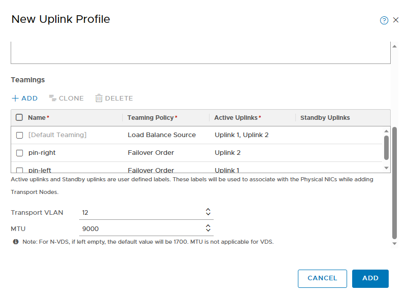
创建 VLAN 传输区域和 Overlay 传输区域
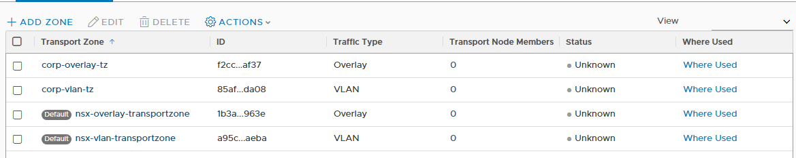
单独部署 Edge 节点
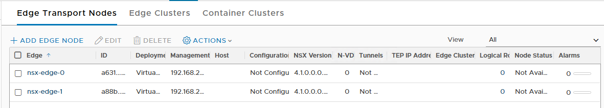
配置 Edge 节点
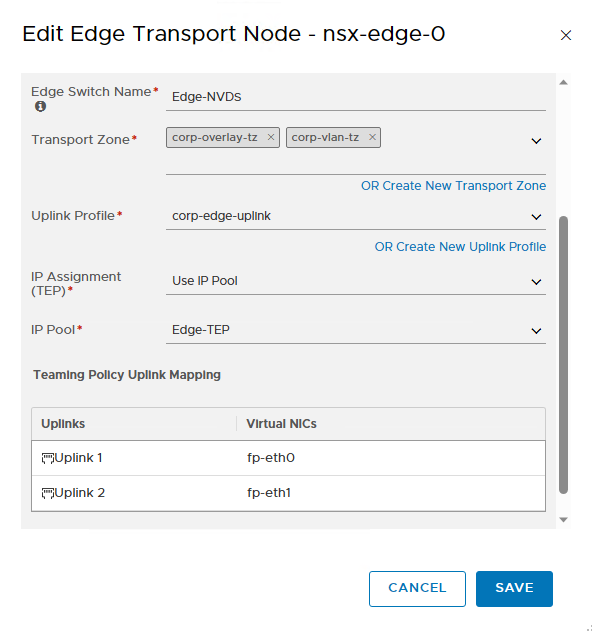
创建 Edge Cluster
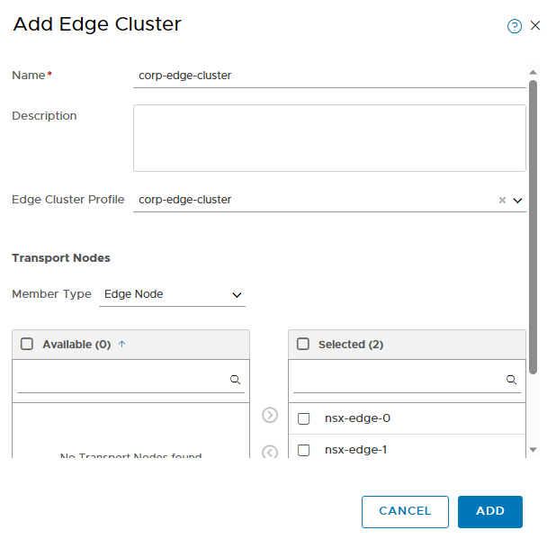
创建连接到物理世界的逻辑网段
正常情况下虚拟环境使用 vlan 11 连接到物理世界, 需要创建一个对应的 vlan-backed segment. 由于这里想实现完全的就地迁移, 保留所有的外部地址, 为了防止迁移过程对外部环境的影响 (地址冲突), 初始故意设置了错误的 vlan id (0) 将 NSX-T 环境和物理环境隔离开, 迁移完成后再改回来
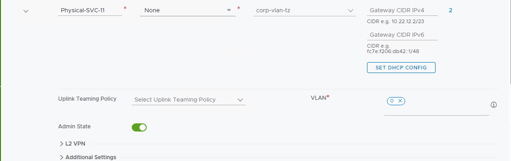
创建 Tier-0/Tier-1 Gateways
创建 tier-0 gateway: corp-t0-gw, A/S 模式
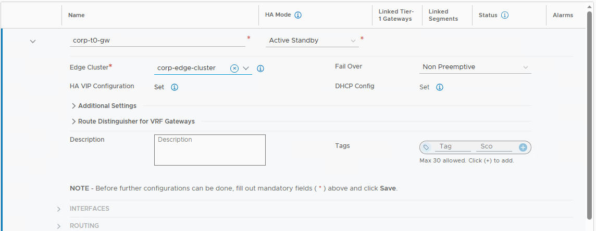
创建 tier-1 gateway: corp-t1-ext, A/S 模式, 连接到 corp-t0-gw
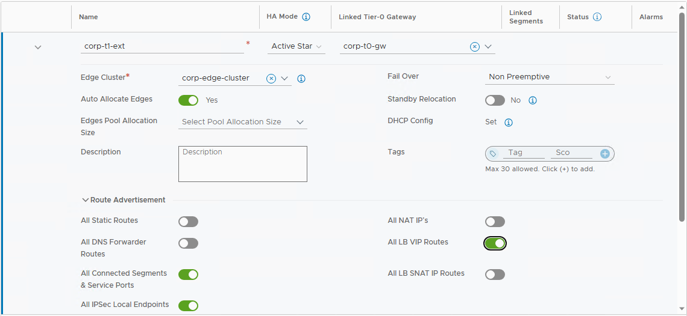
创建 tier-1 gateway: corp-t1-standalone, A/S 模式, 不连接到任何 tier-0
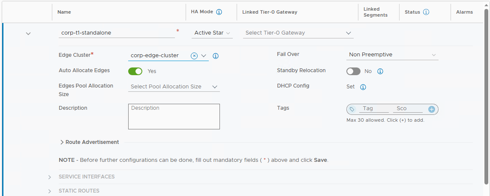
配置 Tier-0 Gateway
能提前配置的部分可以尽量先提前配置出来.
配置 corp-t0-gw 外部接口
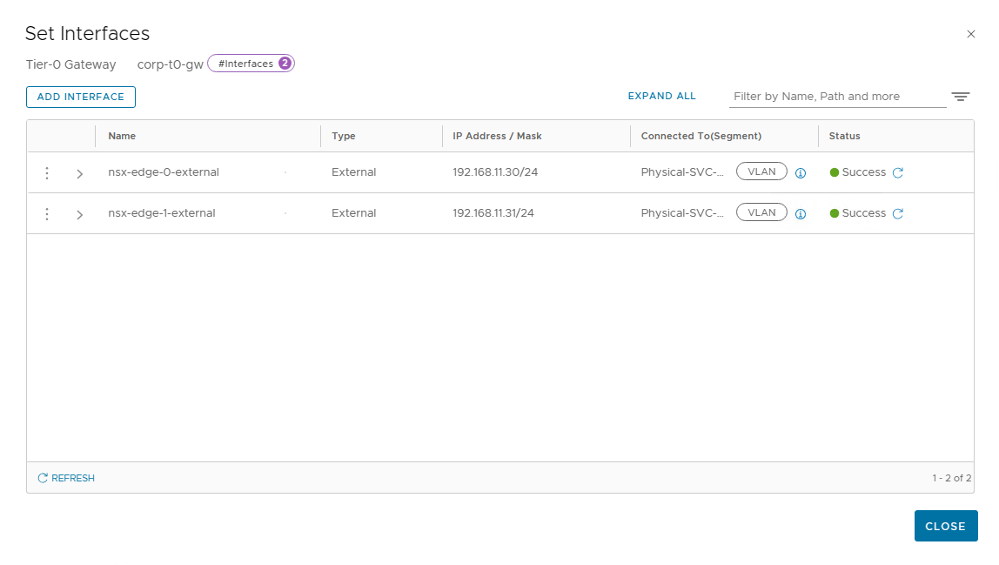
配置 HA-VIP
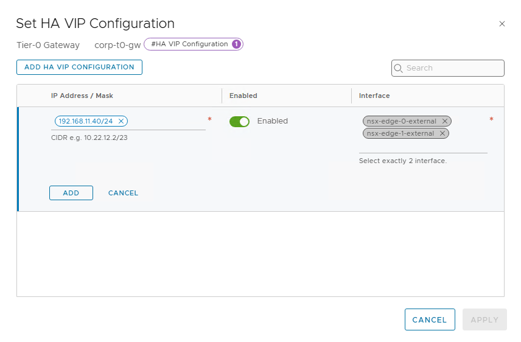
配置默认路由
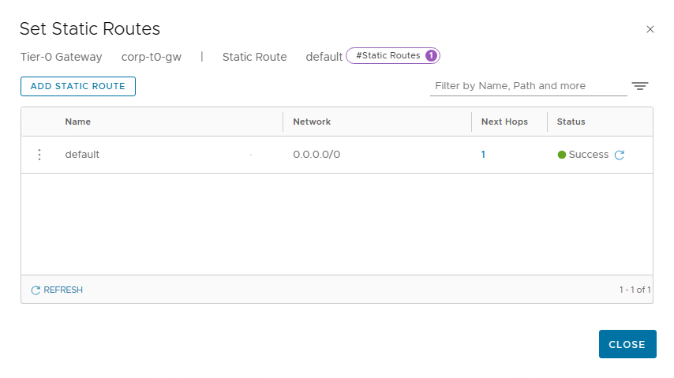
Tier-0 上的 NAT 规则
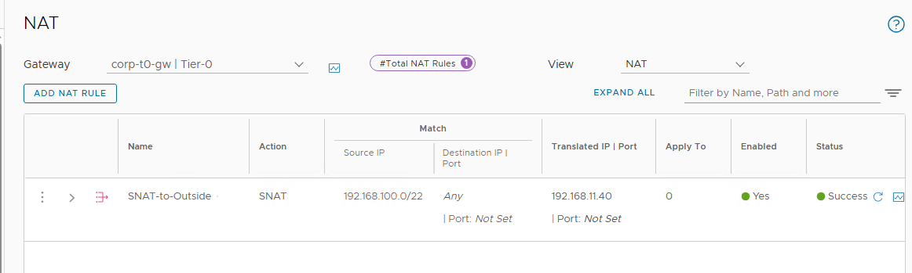
Tier-0 上的防火墙规则
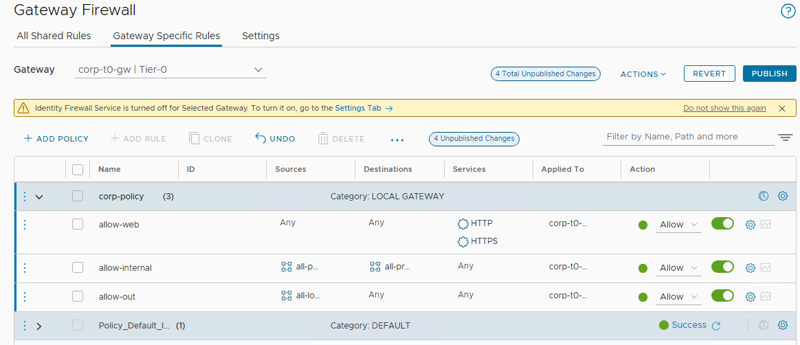
还可以提前配置之后 route-based ipsec VPN 需要的 bgp 部分. 例如, 本地 AS:
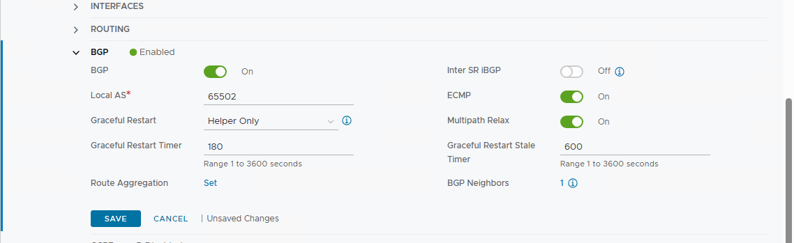
bgp 邻居:
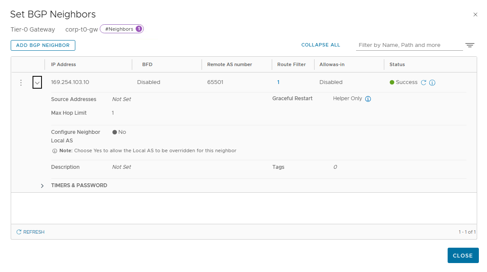
正常更新源地址应该是 VPN tunnel interface 地址, 由于 VPN 配置还没迁移过来, 这个地址还不可用, 因此这里先空着.
bgp 重分布:
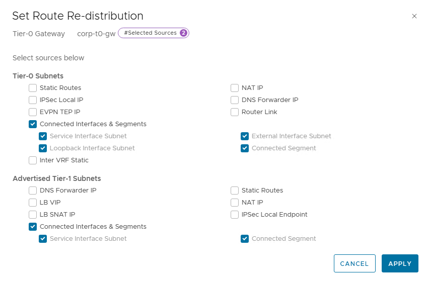
下一篇将开始使用 MC 进行正式迁移.